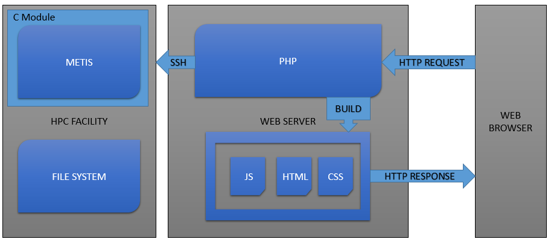

Mesh Slicer
Gotta Slice'em All
Q. Diaferia, T. Levasseur, G. Pérez Bada, P. Wang
Project Motivation
- Graphs and Meshes
- HPC Evolution
- Computational Fluid Dynamics
Increasing problem size
- CFD Applications
- Weather prediction
- Automotive applications
- Aerospace applications

What is a Graph
- Group of data
- Related nodes
- Additional features
- Node weight
- Node Size
- Edge weight

Market Target
CFD is one of the most intensive research fields.
Engineers need an easy way to partition graphs in a timely fashion

Academic and Computing Facilities
CFD is an integral part of multiple MSc and Bachelor schemes
Need for a simple graph partitioning interface
Easy access for any user

Our Solution
- Web Application
- Three-tier architecture
- Based on Metis
Architecture
Components


Demo Time
Why you want to choose us
- We do the work
- We do the work in a timely fashion
- We're good looking
- We're cheap